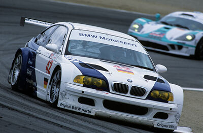
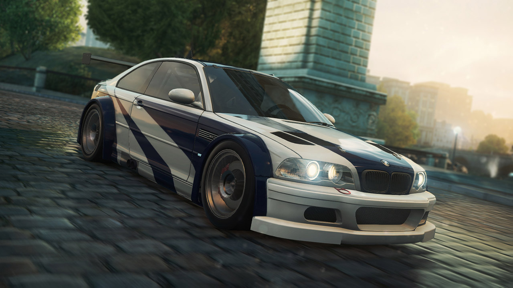

E46 GTR zaživeo je u februaru 2001. godine, pokretao ga je P60B40 i V8 od 3.977 kubika, proizvodeći 493 ks (368 kV; 500 PS). Za razliku od M3 verzije sa straight-six motorom, koja nije bila uspešna kao Porsche 996 GT3, trkačka verzija E46 M3 GTR 16 bila je veoma uspešna u američkoj seriji Le Mans (ALMS), u koju je ušao Schnitzer Motorsport
Rivali poput Porschea istakli su da je ovaj automobil više bio prototip, jer nijedan V8 motor nije bio dostupan u cestovnom BMW E46, što krši duh Gran Turisma.
Pravila ALMS-a izmenjena su za 2002. godinu - neophodno je proizvesti 100 automobila i 1.000 motora da bi se automobil kvalifikovao bez kazni. Iako je BMW mogao da se utrkuje sa svojim V8 GTR-om uz nove mere prema težini i snazi po novim propisima, odlučili su da se povuku iz ALMS-a, čime je zapravo okončana kratkotrajna karijera M3 GTR.

Dva automobila Schnitzer Motorsport GTR vratila su se 2003. godine na 24 sata Nurburgring, pobedivši 1-2 u 2004. i 2005. godini, kao i ulazak u Spa od 24 sata. Zabeležen je i snimak 2004. godine (YouTube), Hans-Joachim Stuck, Pedro Lami, Jorg Muller i Dirk Muller na Nurburgring i Spa-Francorchamps.
Privatni timovi (Scheid, Getrag, itd.) Takođe su ugradili BMW V8 motore od 3.997 ccm u karoseriju E46 da bi se trkali na Nurburgringu, pobedivši na nekim VLN trkama poslednjih godina.
Široko je poznato da je automobil prikazan kao automobil glavnog junaka sa prepoznatljivom plavom i srebrnom bojom u Need for Speed: Most Wanted, Carbon, a pojavljuje se u Need for Speed: World, Need for Speed Most Vanted 2012, Need for No Limits, Need for Speed: Edge i Need for Speed: Heat. To je najupečatljiviji automobil u franšizi Need For Speed. Takođe se pojavio u trkačkoj igri GTR Evolution sa 500 KS.

2001. godine, propisi ALMS-a glasili su da se automobili moraju prodati na dva kontinenta u roku od dvanaest meseci od izdavanja pravila. Da bi ispunio ovo pravilo, BMW je stavio na prodaju 10 putničkih GTR-a nakon sezone 2001. godine, po 250.000 evra (tada 218.000 američkih dolara).
4.0L V8 motor, koji je takođe dostupan u trkačkom izdanju M3 GTR, vrlo je sličan, osim što je modifikovan da zadovolji standarde poput propisa o buci i emisijama.
Automobil se pojavio u video igri Gran Turismo 4, Need for Speed World, Need for Speed: Carbon i Need for Speed: Most Wanted (2005) kao poseban sadržaj u verziji Black Edition.